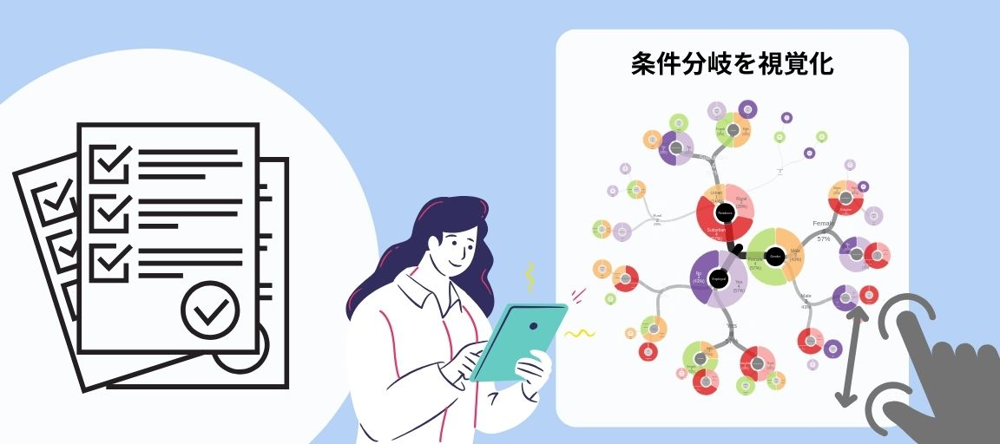

データ分析・可視化
古典的な統計解析から先進的な分析・可視化まで

手がつけられていないデータはありませんか？
とりあえずデータは集めたけれど、どう分析したらよいか分からない。手が足りない。デジタル化できていない。 色々な事情で手がつけられていないデータはございませんか。
もし、集めてみたものの眠っているデータがありましたら、ぜひお声がけください。紙による手書きのアンケートでも構いません。 あらゆる技術を用いて分析・可視化を行い、より深い理解を得るためのサポートをいたします。
視覚的な分析を可能にします

「たくさん質問してみたけれど、横断的に調べられていない」ということはありませんか？ 統計分析まではできないという方でも大丈夫。 独自の可視化技術で、視覚的に分析できる範囲を広げます！
複数選択であることを無視した分析をしていませんか？
「一応分析をしたけれど、ちゃんとできていない」という場合もお任せください。 複数選択質問なのに、回答を積算した図を描いてしまっている場合は、 回答パターンが見える図で洞察を深めましょう！
統計解析をご依頼の方へ
統計解析をご依頼の場合は、必ず検証したい仮説を発注時にご提示いただきます。 仮説のない分析依頼はお断りしておりますので、予めご了承ください。